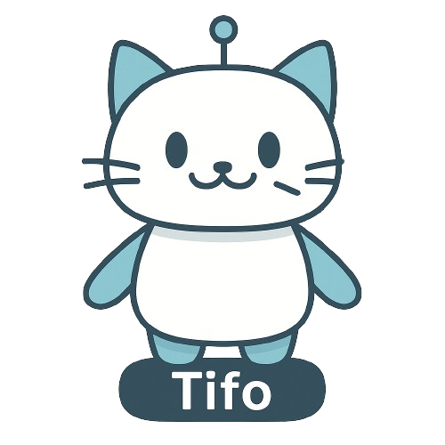

データを読み込んでいます...
TIFO

北陸３県観光データ猫型アドバイザリー
北陸３県連携データ分析
全体ランキング
属性別ランキング
施設・エリア別データ
全体ランキング
全期間
1年
3か月
NPS
満足度(旅行全体)
セグメント別ランキング
全期間
1年
3か月
分析軸を選択...
年代
性別
宿泊数
同伴者
旅の目的
都道府県
情報源
世帯年収
詳細を選択...
はじめに分析軸を選択してください。
訪問者データ
富山
石川
福井
全期間
1年
3か月
施設・エリアを選択してください...
❤️ NPS (顧客推奨度)
(-100 ~ 100の範囲)
🚗 満足度 (旅行全体)
/ 5.0
属性別 来訪者割合 TOP 5
年代
性別
都道府県
旅の目的
情報源
世帯年収
同伴者
宿泊数
詳細な分析はこちら
施設・エリアを選択してください。
TIFOとは
閉じる